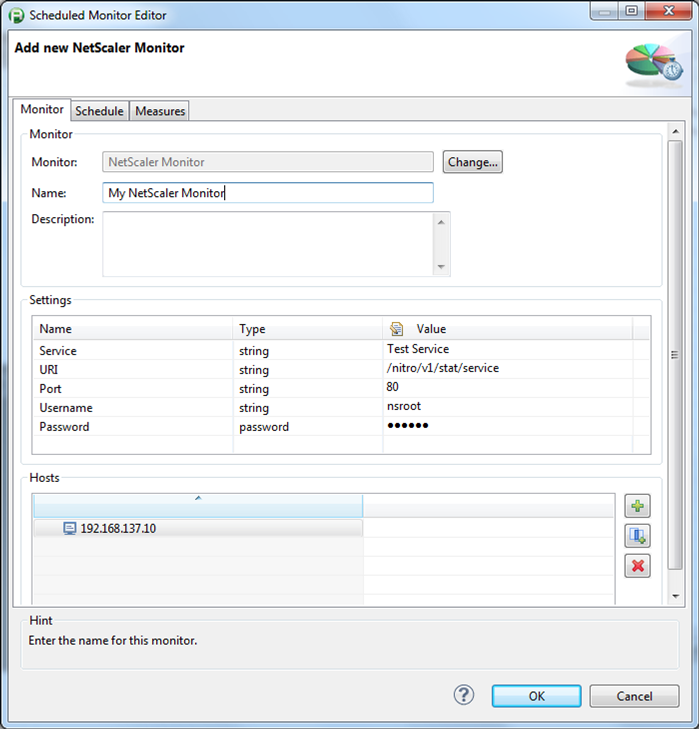
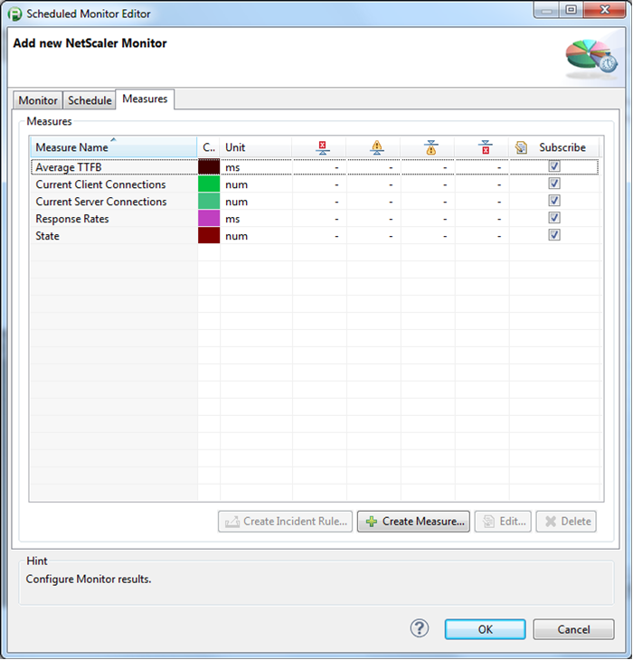
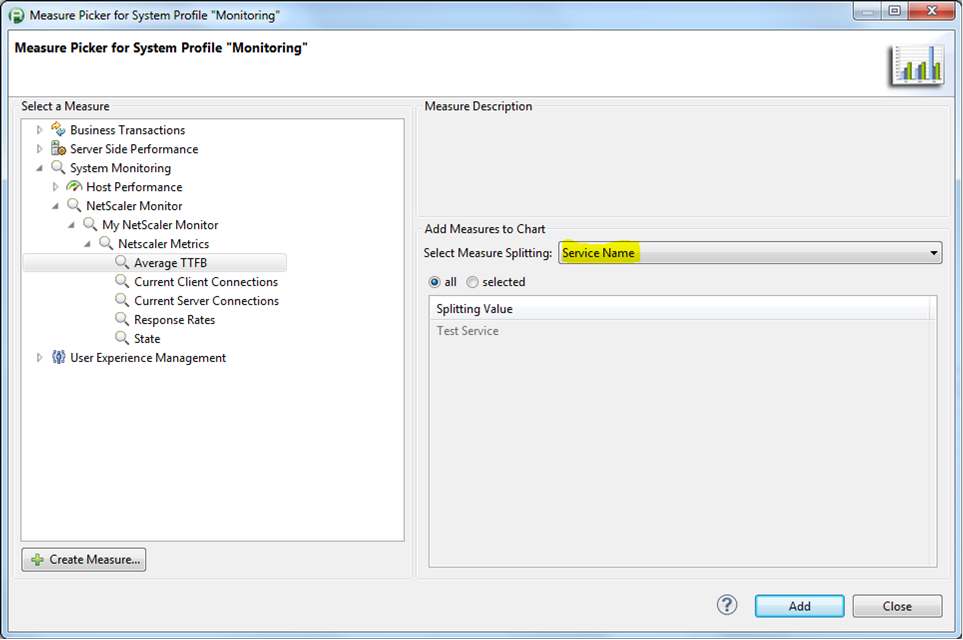

Retrieve statistics from a Citrix NetScaler service using the NITRO API
|
Name and Version |
Citrix NetScaler Monitoring Plugin |
|
Compatible with |
5.6 / 6.0 |
|
Author |
Roman Spitzbart (roman.spitzbart@compuware.com) |
|
Download |
|
|
Description |
Retrieve statistics from a Citrix NetScaler services through the NITRO API |
|
Release History |
2014-07-28 Initial release |
Installation
Import the Plugin into the dynaTrace Server via the "Settings" - "dynaTrace Server" menu -> "Plugins" -> "Install Plugin". For details how to do this please refer to the dynaTrace documentation.
The plugin has 5 required parameters:
|
Parameter |
Description |
|
Service |
Name of the Citrix NetScaler service to query |
|
URI |
URI of the NITRO API REST web service (see here for details) / default is "/nitro/v1/stat/service" |
|
Port |
Port for the NITRO API REST web service / default ist 80 |
|
Username |
|
|
Password |
|
If you want to query more than one service configure multiple monitors with the different service names!
The following measures are returned by the plugin:
|
Measure |
Description |
|
State |
0 - service down/out of service 1 - service up |
|
Average TTFB |
Average Time-to-first-byte in ms |
|
Response Rates |
|
|
Current Client Connections |
|
|
Current Server Connections |
|
Each measure is split by the service name - make sure you select the correct splitting.


